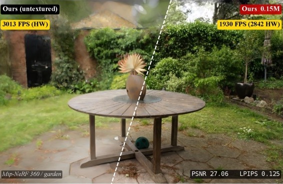
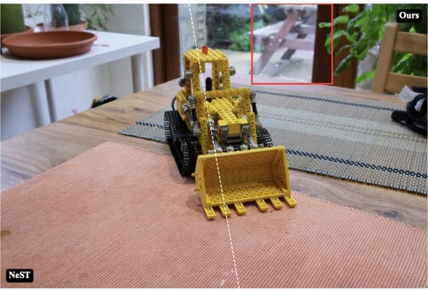
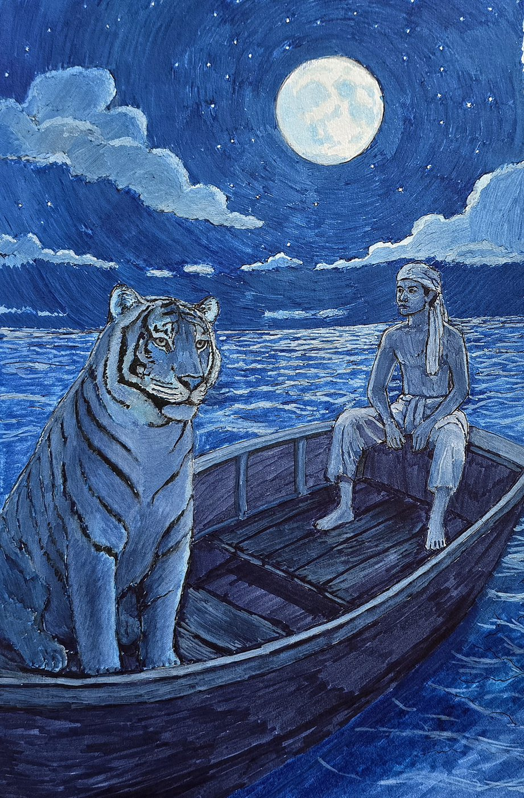

Bake It Till You Make It: Ultrafast Spatial Texture-Atlas Splatting
Fast affff boiii
PhD candidate at the Technical University of Munich and Siemens Healthineers, working on sparse 3D reconstruction.
I'm a PhD candidate in computer science under the supervision of Prof. Rüdiger Westermann at the Technical University of Munich, and Dr. Klaus Engel at Siemens Healthineers. I am developing sparse textured radiance fields to render large-scale medical data.
I'm currently going down the rabbit hole of sparse, explicit radiance field representations. I hope to push textured 3D splatting to its limits in terms of speed, compression, and quality.
I'm interested in how a 3D scene should be stored so that it renders well on the hardware people already have.
Gaussian and surfel splatting with richer primitives: per-primitive latent features, hash grids, and texture atlases.
Baking learned appearance into formats the GPU samples natively, so rendering needs no neural network at inference. Hardware rasterization, mobile GPUs and XR headsets.
Compact neural representations for large data, including synchrotron scans that run to 120 GB each.
Reconstruction and rendering for clinical data, from intraoperative microscopy to cancer imaging.

Fast affff boiii

They are latents that are hybrid I think.
Technical University of Munich
Saarland University
University of Wisconsin–Madison
Maharashtra Institute of Technology, Pune
Advisors: Prof. Rüdiger Westermann, Dr. Klaus Engel
Corporate Research and Technology · Advisor: Dr. Tommaso Giannantonio
Real-time, sub-millimeter point cloud estimation for intraoperative surgical microscopy of the brain, using CT and MRI priors.
Advisors: Prof. Paul Swoboda, Prof. Jan Eric Lenssen
Medical text processing, deployed at Deenanath Mangeshkar Hospital
Oil, acrylic, graphite and charcoal. A few pieces are below.
I play, tolerably. I also sing, tolerably.
Kingkiller Chronicle, Vagabond, A Gentleman in Moscow, Blue Giant.
Finished every one of them on PC. I beat Isshin by not blinking and repeating the boss fight for three hours.

MSc thesis · Max Planck Institute for Informatics
Custom CUDA kernels with a local hash-grid primitive, B-spline interpolation, and super-resolution, for real-time, point-based rendering with a screen-space decoder.
Research assistant · Max Planck Institute for Informatics
An end-to-end differentiable pipeline built around a graph-based asymmetric multiway cut solver.
Computer Graphics course · Saarland University
A-tier finish in the course's rendering competition. Carried hard in the ray tracer by Soumava Paul. Scene based on a nightmarish deadline. Project page · Code
Capstone project · UW–Madison
Depth maps estimated from monocular video, then used with eye tracking to refocus the video where the viewer looks. Code
Image processing course · UW–Madison
Removes ink artifacts from page scans to recover watermarks. Ranked first in the class competition. Code
Bachelor thesis · MIT Pune
A U-Net, VGG16 and DenseNet121 pipeline that estimates a child's skeletal maturity, sponsored by India's Department of Science and Technology.